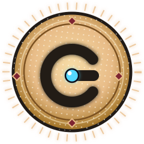
A spark relighting the dark. The complete visual direction for a kid-friendly bullet-heaven — ready for claude.ai/design and Claude Code.
Gizmo is a bullet-heaven / survivors-like with an unusually deep "juice" layer. The gameplay is proven and fun. This bible re-skins the placeholder art into one cohesive, premium, dopamine-forward identity.
A vast, dormant machine-cosmos drained of color. When Shape Storms roll in — waves of charged geometric debris — the dark briefly comes alive. The player's job is to ride the storm and light it up.
A tiny, plucky spark-bot: a glowing cyan core in a friendly chassis. Reads as a comma of light even at 16px. Gizmo sweeps up loose Sparks, cracks Caches, and discharges brilliant Novas.
A disciplined dark, minimal void where light = reward. Every dopamine burst is earned and distilled against calm negative space. The world justifies the aesthetic: you are literally bringing color back to the dark.
Calm, readable core gameplay. Bright, loud payoffs. The quieter the field, the harder a Nova or Cache-crack hits. Minimalism makes the pop land.
Feedback isn't decoration — it's the product. Screen-shake, squash, particles, escalating numbers and audio-synced pulses are first-class, not afterthoughts.
Flat vector forms, rounded but never babyish, with bold outlines and soft inner glow. Premium-mobile restraint (Alto / Monument Valley) on a neon-dark field (Geometry Wars).
Enemies have faces and attitude. This is the anti-generic move: the "storm" has personality, so the world feels handcrafted, not asset-flipped.
Mixed ages, busy screens. The HUD must stay legible against the loudest moment. Color-code every system; surface meters only when they matter (Hades / Dead Space contextual HUD).
A deep indigo void, a warm-white light, four locked "charge" hues for the feedback economies, and a tight accent set. Jewel-neon, not candy.
| Tier | Hue | Treatment |
|---|---|---|
| Common | Stone #9892B4 | Flat border, no glow |
| Uncommon | Mint #5BE6A4 | Subtle outer glow |
| Rare | Cyan #54D8FF | Medium glow + sheen |
| Epic | Pink #FF79C6 | Strong glow, lifts on hover |
| Evolve | Gold #FFD24A | Max glow, double frame, corner flourish |
Two rounded-geometric families, both free Google Fonts. Friendly enough for kids, confident enough to read premium — and they render beautifully at every size.
Wordmarks, screen titles, card names, and every dopamine number (score, combos, +250 pops). Weights 600–700.
Labels, stats, descriptions, eyebrows. Weights 800–900 for presence on the dark field.
letter-spacing 1.5–2px, dimmed. Never the star — they frame the value.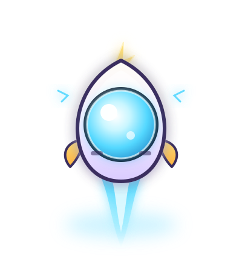
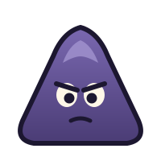
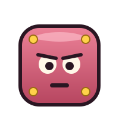
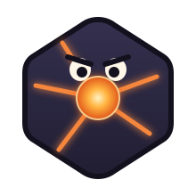
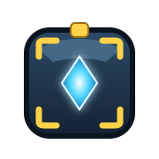
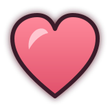
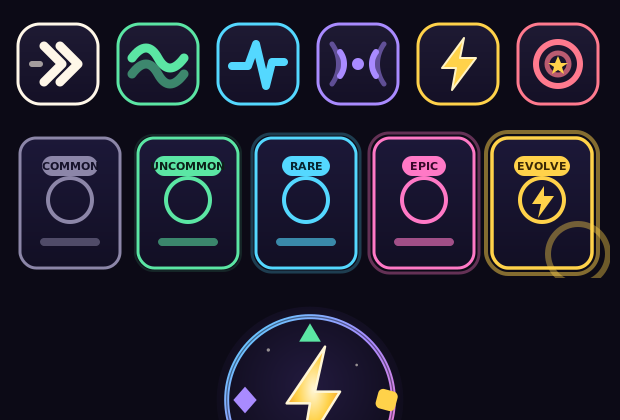
Ability / charge icons (Boost · Flow · Clutch · Echo · Surge · Bounty) on dark-glass chips, and the five-tier rarity ladder. Per-upgrade icons are a production set to expand — these lock the style.
The game's signature is four parallel reward loops running at once. Each gets a locked hue, icon, and motion so players track them without reading.
| System | Hue | Icon | Feeling | Payoff |
|---|---|---|---|---|
| Flow | Mint | Current / waves | Uninterrupted sweeping | Flow Rush — field-wide pull |
| Clutch | Cyan | Pulse spike | Daring near-misses | Clutch Burst — detonate, snap-boost |
| Echo | Violet | Concentric rings | A power window open | Echo Rush — extend & chain |
| Surge | Gold | Lightning bolt | Charge building | Surge Burst — big stored discharge |
Plus Bounty (coral chase chains) and Cache (gold loot). The HUD cluster (see next) stacks these so a glance reads the whole board.
Four key screens, built as faithful HTML/CSS so Claude Code can lift them directly. Open the live files in /design-handoff.
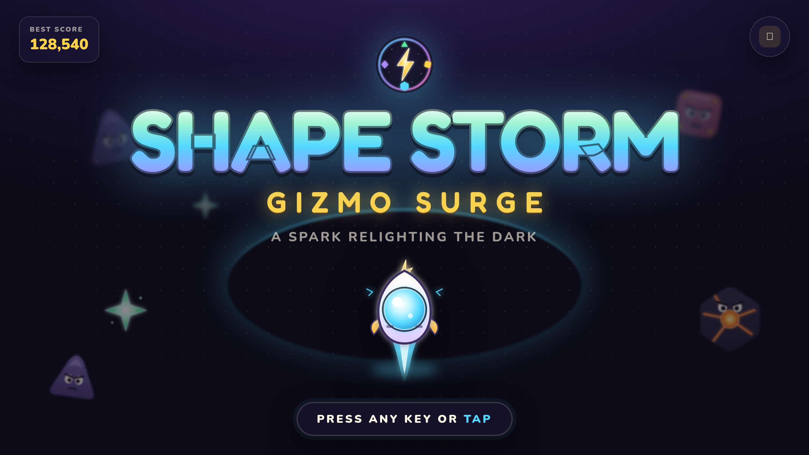
mockup-title.html — wordmark gradient + glow, Gizmo on the surge arc, the distant storm peeking from the dark. The whole brand in one frame.
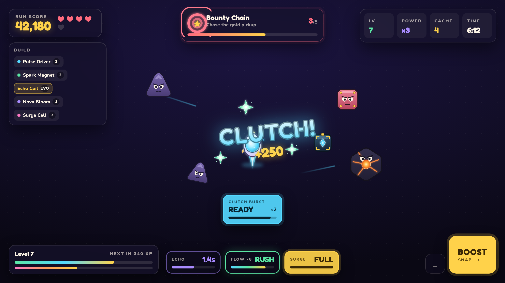
mockup-hud.html — dark-glass panels keep the field readable; the four economies sit in a bottom cluster (Echo / Flow / Surge + the Clutch banner); a +250 CLUTCH! pop shows the number style. Score, hearts, stats, bounty, build, XP & run meters, Boost.
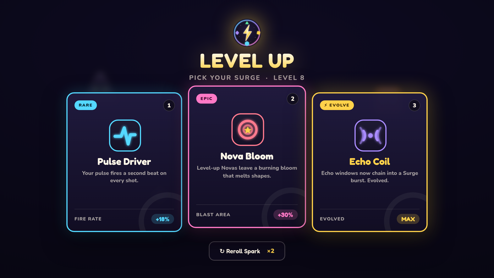
mockup-levelup.html — rarity ladder in action (Rare / Epic / Evolve), hotkeys, reroll.
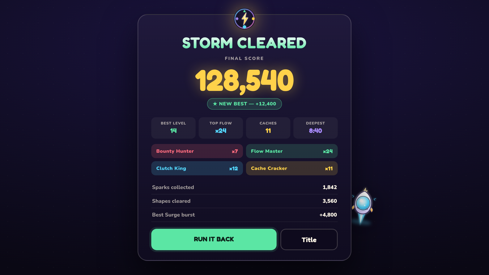
mockup-results.html — big score, records, color-coded run awards, "Run it back."
The most important section. Borrowed from Balatro and the Vlambeer "game-feel" school: feedback is layered, high-density, and synced.
Numbers escalate in pitch and size together. A scoring chain should feel like a slot-machine cascade: each tick lands a sound, a scale-bump, and a shake in lockstep. The dual channel is what turns arithmetic into a jackpot.
Accessibility Honor prefers-reduced-motion: keep color/scale feedback, drop shake and heavy particles. Never rely on color alone — pair every hue with an icon and motion.
The primary above is Lumen & Static: characterful but disciplined. Two dials on either side, included so claude.ai/design can explore the edges.
Elevate the original hand-painted/watercolor "inventor" world into a cohesive, premium storybook craft look. Warm paper, ink lines, gouache texture. Lower contrast, cozier, more handmade. Best if you want charm over arcade punch.
Strip the faces: Gizmo becomes a pure glyph of light, enemies become clean signed shapes. Maximal Geometry-Wars minimalism and arcade purity. Best if you want the most abstract, "distilled" reading of Gizmo.
The charge hues map almost 1:1 to the existing CSS variables. The real work is: deepen the base to the Void, swap the cream "paper" panels for dark glass, add the type + glow system, and apply the asset language. Token churn is minimal.
| Existing var | Was | New | Note |
|---|---|---|---|
--ink / bg | #17121f / #24172d | #0C0A16 Void | Deepen; field #15102A |
--paper | cream rgba | Dark glass #181334 .72α | The big change |
--mint | #70e6a8 | #5BE6A4 | Flow — near-identical |
--cyan | #59dbff | #54D8FF | Clutch |
--violet | #b78cff | #A98BFF | Echo |
--gold | #ffd35a | #FFD24A | Surge |
--coral / --pink | #ff6584 / #ff79c6 | #FF6B7E / #FF79C6 | Keep |
| font-family | Arial | Fredoka + Nunito | Add web fonts |
assets/*.svg — production-ready vector: Gizmo, 3 enemies, Spark, Cache (+open), Heart, icons, rarity, emblem.mockup-*.html — the four screens, real CSS to lift.screens/*.png — rendered references.ART-DIRECTION.md — this bible in portable text.HANDOFF-claude-design.md — paste-ready prompts for claude.ai/design + next steps.A spark relighting the dark.
Gizmo · Art Direction Bible v1.0